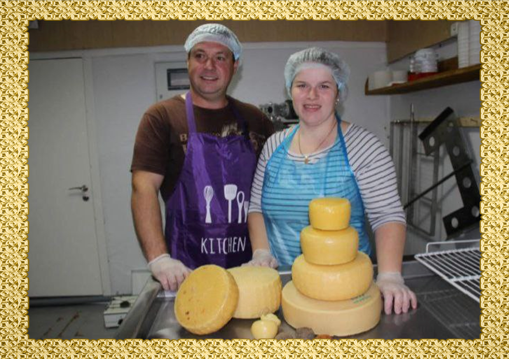
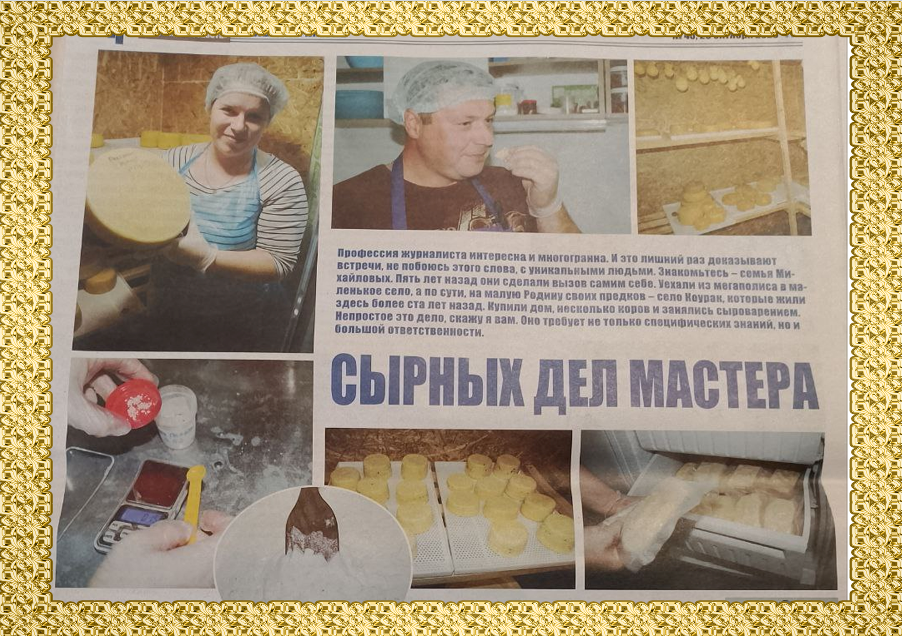
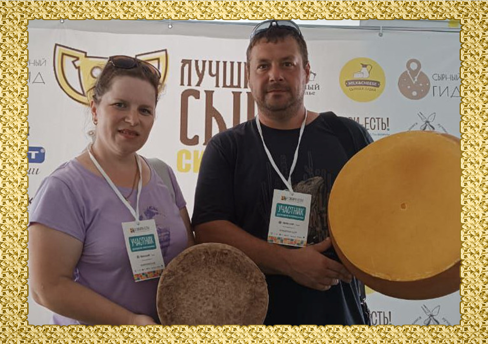

О нас

Кончено же, самый лучший способ сохранить и переработать молоко - это варить сыр. В июне 2023 года мы открыли "Михайловскую сыроварню" в селе Коурак. Свои сыры мы варим на итальянских, французских и немецких заквасках. Ассортимент у нас очень разнообразный, состоящий из молодых, выдержанных полутвёрдых и твёрдых сыров.

В 2023 году в нашей сыроварне была проведена экскурсия для новостной газеты Тогучинского района. Мы рассказали, где обучались и как нам удалось открыть сыроварню. Прошли обучение в одной из Новосибирских сыроварен и дважды обучались у итальянского мастера Симона Манфредини. Об этой встрече в дальнейшем было написано в Тогучинской газете.

В июле 2024 года мы участвовали в конкурсе "Лучшие сыры Сибири" и заняли несколько призовых мест:
Сыр "БЕЛПЕР КНОЛЛЕ в кавказской обсыпке" 
Сыр "МАНЧЕГО" 
В дальнейшем собираемся продолжать участвовать в конкурсах с большим количеством сыров.